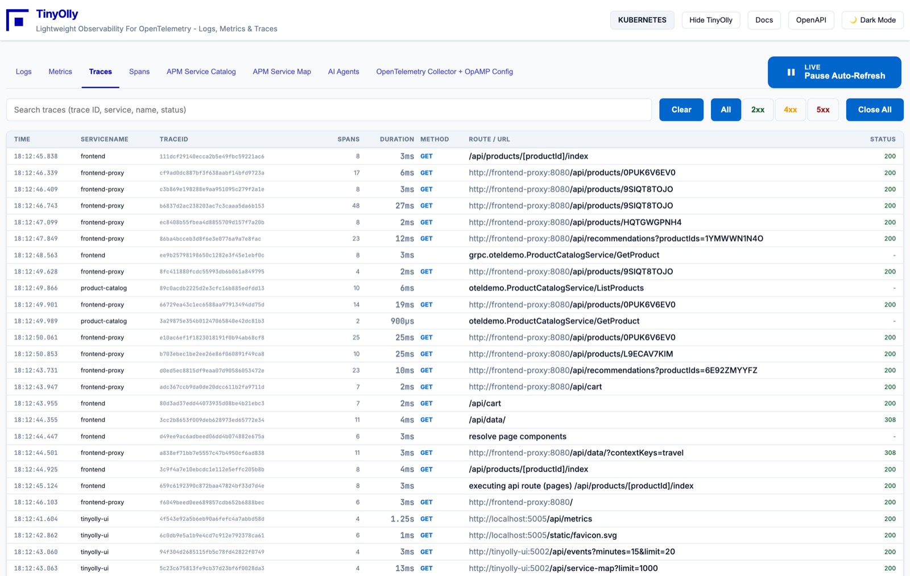

Docker Deployment


TinyOlly UI showing distributed traces
Run everything from the repo (clone it, or download the current GitHub release archive):
1. Deploy TinyOlly Core (Required)
This pulls the images from Docker Hub (./01-start-core-local.sh builds them from your checkout) and starts:
- OTel Collector:
localhost:4317(gRPC) andlocalhost:4318(HTTP) - OpAMP Server:
ws://localhost:4320/v1/opamp(WebSocket),localhost:4321(HTTP REST API) - TinyOlly UI:
http://localhost:5005(empty until you send data), including the OpenTelemetry Collector + OpAMP Config tab (setup) - TinyOlly MCP server:
http://localhost:8765/mcp, read-only, for AI agents (set up and connect it) - TinyOlly OTLP Receiver and its SQLite storage
Note
01-start-core.sh starts from a clean slate: it removes the SQLite data volume and the supervisor's cached collector config. To keep data, restart instead:
Stop:
2. OpenTelemetry Demo (Astronomy Shop)
A 16-service subset of the upstream demo sending to TinyOlly's collector, with failure-injection flags, in about 1.6 GB of VM memory. See OpenTelemetry Demo.
cd docker-otel-demo
./01-start-otel-demo.sh # shop at http://localhost:8080
./03-set-flag.sh paymentFailure 50%
./02-stop-otel-demo.sh
The TinyOlly AI SRE Agent watches the shop and investigates faults as they happen: cd docker && ./05-start-sre.sh --demo.
3. Use TinyOlly with Your Own Apps
Point your app's OpenTelemetry exporter at the collector: from containers http://otel-collector:4317 (gRPC) or :4318 (HTTP); from your Mac (Colima forwards the ports) http://localhost:4317 or :4318.
4. TinyOlly Core-Only Deployment: Use Your Own Docker OpenTelemetry Collector
TinyOlly without its collector, for your own collector or direct sends to the receiver:
It starts the OTLP receiver on localhost:4343 (gRPC only), the OpAMP server (ws://localhost:4320/v1/opamp, localhost:4321), the UI (http://localhost:5005) and the MCP server (http://localhost:8765/mcp, set up and connect it). Point any collector's exporter at tinyolly-otlp-receiver:4343, for example:
exporters:
debug:
verbosity: detailed
otlp:
endpoint: "tinyolly-otlp-receiver:4343"
tls:
insecure: true
# Batching lives in the exporter's queue; the batch processor is deprecated (removed in collector v0.177.0).
sending_queue:
batch:
enabled: true
service:
pipelines:
traces:
receivers: [otlp]
exporters: [debug, otlp, spanmetrics]
metrics:
receivers: [otlp,spanmetrics]
exporters: [debug, otlp]
logs:
receivers: [otlp]
exporters: [debug, otlp]
Stop:
OpAMP Configuration (Optional)
To manage a collector from the UI's OpenTelemetry Collector + OpAMP Config page, add the OpAMP extension:
A complete example (OTLP receivers, OpAMP, exporter-side batching, spanmetrics) is the default template, docker/otelcol-configs/config.yaml.
Building Images
Deploy scripts pull images from Docker Hub. To build locally or publish, see Development and testing and build/README.md.